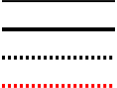
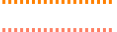
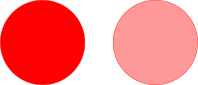
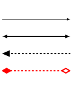
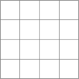
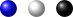
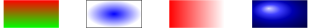
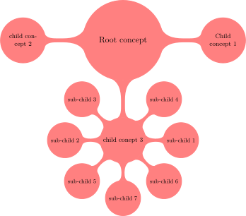
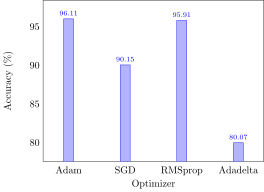
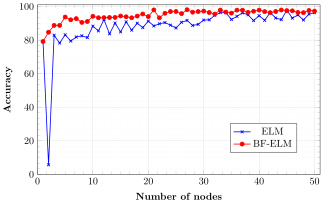

▶︎
all
running...
LATEX Graphics drawing with Tikz- What is tikz?
- Why we want to use tikz?
- Pros and cons of tikz
- A typical tikz environment
- A inline tikz environment
- Line drawing example
- Rectangle drawing example
- Ellipse and circle drawing example
- Drawing Bezier Curve
- Changing draw style
- Controlling fill and transparency of colors
- Drawing arrow line
- nodes in TikZ
- relative controls of shapes
- Draw grid shapes
- Shading in TikZ
- Grouping elements
- Cliping in tikz
- Mindmap library in tikz
- Loops in tikz
- Design a flow chart for adding 10 numbers uning TikzEdt Tool
- Plots in TikZ
- Plots from csv file in TikZ
- Plots from txt file in TikZ
LATEX Graphics drawing with Tikz
What is tikz?
- TikZ is probably the most complex and powerful tool to create graphic elements in LaTeX.
- Tikz (ist kein Zeichenprogramm) : it’s not a drawing program
- Tikz is many times writen as PGF/TikZ.
- PGF : Portable Graphics Format
-
PGF: internal engine; TikZ: frontend
- Tikz is a vector graphics drawing package that works in the
LATEX environment.
Why we want to use tikz?
- Nicely integrated into
LATEX and Beamer - reduction in size of pdf.
- quility of picture.
- more control over figure in run time.
- Placed inline figures in the middle of text
Pros and cons of tikz
- Pros
- Programatically draw with exact precision
- Consistent typography
- Very fast for simple graphics
- Cons
- Steep learning curve
- No WYSIWYG (although TikzEdt is a app develove for this)
- Changes require recompile
- TikZ is cool for 2D pictures. For 3D graphics not so easy.
A typical tikz environment
\documentclass{article} \usepackage{tikz} \begin{document} \begin{tikzpicture} <---- Your code goes here ---> \end{tikzpicture} \end{document}
A inline tikz environment
\documentclass{article} \usepackage{tikz} \begin{document} in line tikz \tikz \fill[orange] (0,0) circle (1ex); provides \end{document}
▶︎
all
running...
Line drawing example
\documentclass{article} \usepackage{tikz} \begin{document} \begin{tikzpicture} \draw (0,0) -- (4,4); \end{tikzpicture} \end{document}
▶︎
all
running...
Rectangle drawing example
\documentclass{article} \usepackage{tikz} \begin{document} \begin{tikzpicture} \draw (-5.5,3) rectangle (0.5,-0.5); \end{tikzpicture} \end{document}
▶︎
all
running...
\documentclass{article} \usepackage{tikz} \begin{document} \begin{tikzpicture} \draw (-5.5,-0.5) -- (-5.5,3) -- (0.5,3) -- (0.5,-0.5) --cycle; \end{tikzpicture} \end{document}
▶︎
all
running...
Ellipse and circle drawing example
\documentclass{article} \usepackage{tikz} \begin{document} \begin{tikzpicture} \draw (-2,2) ellipse (1 and 0.5); \draw (1,2) ellipse (1 and 1); \end{tikzpicture} \end{document}
▶︎
all
running...
Drawing Bezier Curve
\documentclass{article} \usepackage{tikz} \begin{document} \begin{tikzpicture} \draw (0,0) .. controls (0,4) and (4,0) .. (4,4); \end{tikzpicture} \end{document}
▶︎
all
running...
Changing draw style
\documentclass{article} \usepackage{tikz} \begin{document} \begin{tikzpicture} \draw[line width=2] (0,0) -- (4,0); \draw[line width=4] (0,-1) -- (4,-1); \draw[line width=4, dashed] (0,-2) -- (4,-2); \draw[red, line width=4, dashed] (0,-3) -- (4,-3); \end{tikzpicture} \end{document}
▶︎
all
running...

Predefined Colors
black, blue, brown, cyan, darkgray, gray, green, lightgray, lime, magenta, olive, orange, pink, purple, red, teal, violet, white, yellow
Defining own Colors
\definecolor{new_orange}{RGB}{255,127,100}
Example:
\documentclass{article} \usepackage{tikz} \begin{document} \begin{tikzpicture} \definecolor{new_orange}{RGB}{255,127,100} \draw[orange, line width=4, dashed] (0,0) -- (4,0); \draw[new_orange, line width=4, dashed] (0,-1) -- (4,-1); \end{tikzpicture} \end{document}
▶︎
all
running...

Controlling fill and transparency of colors
\documentclass{article} \usepackage{tikz} \begin{document} \begin{tikzpicture} \definecolor{new_orange}{RGB}{255,127,100} \draw[color=red, fill=red](0,0) circle (1.5); \draw[color=red, fill=red!40](4,0) circle (1.5); \end{tikzpicture} \end{document}
▶︎
all
running...

Drawing arrow line
\documentclass{article} \usepackage{tikz} \usetikzlibrary{arrows} \begin{document} \begin{tikzpicture} \draw[-latex,line width=1] (0,0) -- (4,0); \draw[latex-latex,line width=2] (0,-1) -- (4,-1); \draw[triangle 45-,line width=2, dashed] (0,-2) -- (4,-2); \draw[diamond-open diamond,red, line width=2, dashed] (0,-3) -- (4,-3); \end{tikzpicture} \end{document}
▶︎
all
running...

nodes in TikZ
\documentclass{article} \usepackage{tikz} \begin{document} \begin{tikzpicture} \node (Node A) at (0,0) {Node A}; \node (Node B) at (4,4) {Node B}; \draw[fill=red] (2,3) circle (0.05cm); \draw (2,3) circle (1cm) node[anchor=north west] {In Circle}; \end{tikzpicture} \end{document}
▶︎
all
running...

anchor options:
- center
- east
- west
- north
- south
- north west
- north east
- south west
- south east
relative controls of shapes
\documentclass{article} \usepackage{tikz} \begin{document} \begin{tikzpicture} \node (origin) at (0,0) {~}; \draw (origin.center)-- +(3cm,5cm) -- +(3cm,0cm)--cycle; \draw (origin.center)+(5cm,2cm) circle (1cm); \end{tikzpicture} \end{document}
▶︎
all
running...
Draw grid shapes
\documentclass{article} \usepackage{tikz} \begin{document} \begin{tikzpicture} \draw[help lines, thick] (0,0) grid (4,4); \end{tikzpicture} \end{document}
▶︎
all
running...

Shading in TikZ
Shading functions
\documentclass{article} \usepackage{tikz} \begin{document} \begin{tikzpicture} \shade[shading=ball, ball color=blue] (0,0) circle (.3); \shade[shading=ball, ball color=white] (1,0) circle (.3); \shade[shading=ball, ball color=black] (2,0) circle (.3); \end{tikzpicture} \end{document}
▶︎
all
running...

shading a shape
\documentclass{article} \usepackage{tikz} \begin{document} \begin{tikzpicture} \shade[top color=red, bottom color=green] (0,0) rectangle (2,1); \shade[draw,shading=radial, inner color=blue] (3,0) rectangle (5,1); \shade[left color=red] (6,0) rectangle (8,1); \end{tikzpicture} \end{document}
▶︎
all
running...

Grouping elements
- the scope invronment is used to isolate and group one or more elements.
\documentclass{article} \usepackage{tikz} \begin{document} \begin{tikzpicture} \begin{scope} \bf \draw (-3,2) rectangle (-1.5,1); \node at (-0.5,1.5) {Dibya}; \end{scope} \draw (-5,1.5) ellipse (0.5 and 0.5); \node at (1,1.5) {Sundar}; \end{tikzpicture} \end{document}
▶︎
all
running...
Cliping in tikz
- After a \clip command, all subsequent drawings are clipped, only the parts inside the clipping region are drawn.
- I Use the scope environment to restrict the effect of clipping:
\documentclass{article} \usepackage{tikz} \begin{document} \begin{tikzpicture} \begin{scope} \clip (-0.5, 0) circle (1); \clip ( 0.5, 0) circle (1); \fill[color=gray] (-2,1.5) rectangle (2,-1.5); \end{scope} \end{tikzpicture} \end{document}
▶︎
all
running...
Mindmap library in tikz
\documentclass{article} \usepackage{tikz} \usetikzlibrary {mindmap} \begin{document} \begin{tikzpicture}[mindmap, concept color=red!50] \node [concept] {Root concept} child[grow=right] {node[concept] {Child concept 1}} child[grow=left] {node[concept]{child concept 2}} child[grow=down] { node[concept]{child conept 3} child[grow=east] {node[concept]{sub-child 1}} child[grow=west] {node[concept]{sub-child 2}} child[grow=north west] {node[concept]{sub-child 3}} child[grow=north east] {node[concept]{sub-child 4}} child[grow=south west] {node[concept]{sub-child 5}} child[grow=south east] {node[concept]{sub-child 6}} child[grow=south] {node[concept]{sub-child 7}} }; \end{tikzpicture} \end{document}
▶︎
all
running...

Loops in tikz
\documentclass{article} \usepackage{tikz} \begin{document} \begin{tikzpicture} \foreach \x in {-5,...,5} \draw (\x, 0.1) -- (\x, -0.1) node [below] {\x}; \end{tikzpicture} \end{document}
▶︎
all
running...
Design a flow chart for adding 10 numbers uning TikzEdt Tool
\documentclass{standalone} \usepackage{tikz} \begin{document} \begin{tikzpicture} \draw (-1,3.5) ellipse (0.5 and 0.5) node {\bf Start}; \draw (-2.5,1.5) -- (0.5,1.5) -- (0.7,2.5) -- (-2.3,2.5)--cycle; \draw (-2.5,1) rectangle (0.5,0); \draw[fill=black] (-1,-5) ellipse (0.5 and 0.5) node[white] {\bf End}; \draw (-1,-0.5) -- (-2.5,-1.5) -- (-1,-2.5) -- (0.5,-1.5) -- (-1,-0.5); \draw (-2.5,-4) -- (0.5,-4) -- (0.7,-3) -- (-2.3,-3)--cycle; \draw (-1,3) -- (-1,2.5); \draw (-1,1.5) -- (-1,1); \draw (-1,-2.5) -- (-1,-3); \draw (0.5,-1.5) -- (1.25,-1.5); \draw (-1,-4) -- (-1,-4.5); \node at (-1,2) {Input array $a$}; \node[anchor=south] at (-1,0.5) {$i=1$}; \node[anchor=north] at (-1,0.5) {$s=0$}; \draw (1.25,-1) rectangle (4.25,-2); \draw (-1,0) -- (-1,-0.5); \node[anchor=south] at (-1,-1.5) {is }; \node[anchor=north] at (-1,-1.5) {$i<=N$ ?}; \node at (2.75,-1.25) {$s\leftarrow s + a[i]$}; \node[anchor=south] at (0.75,-1.5) {yes}; \node at (2.75,-1.75) {$i \leftarrow i+1$}; \draw (4.25,-1.5) -- (4.5,-1.5) -- (4.5,-0.25) -- (-1,-0.25); \node[anchor=west] at (-1,-2.75) {No}; \node at (-1,-3.5) {Print s}; \end{tikzpicture} \end{document}
▶︎
all
running...
Plots in TikZ
Plots from csv file in TikZ
Package requited: pgfplot, pgfplotstable
\documentclass{standalone} \usepackage{tikz} \usepackage{pgfplots, pgfplotstable} \begin{document} \begin{tikzpicture} \pgfplotstableread[ col sep=comma,]{opti_vs_acc.csv}\datatablt \begin{axis} [ ybar, bar width=10pt, enlargelimits=0.15, x=2cm, ylabel={Accuracy (\%)}, xlabel={Optimizer}, xtick=data, typeset ticklabels with strut, %x label style={at={(axis description cs:0.5,-0.2)},anchor=north}, xticklabels from table={\datatablt}{opti}, %x tick label style={rotate=90,anchor=east}, % scale x tick={base 10:-3}, tickwidth=0mm, nodes near coords, every node near coord/.append style={font=\scriptsize}, nodes near coords align={vertical}, ] \addplot table [x expr=\coordindex, y=densenet, col sep=comma]{opti_vs_acc.csv}; \end{axis} \end{tikzpicture} \end{document}
▶︎
all
running...

Plots from txt file in TikZ
\documentclass{standalone} \usepackage{tikz} \usepackage{pgfplots, pgfplotstable} \begin{document} \begin{tikzpicture} \begin{axis}[ grid=both, grid style={line width=.1pt, draw=gray!10}, major grid style={line width=.2pt,draw=gray!50}, minor tick num=5, scale only axis, % The height and width argument only apply to the actual axis height=6cm, width=10cm, xmax=51, xmin=0, ymax=101, ymin=0, legend pos=north east, xtick={0,10,20,30,40,50}, xlabel={\textbf{Number of nodes}}, ylabel={\textbf{Accuracy}}, ylabel near ticks, legend style={ at={(0.8,0.3)}, anchor=north} ] \addplot[blue, thick,mark=x] table [y=d,x=c,col sep=comma] {ResultShuttel.txt}; \addplot[red, thick,mark=*] table [y=f,x=c,col sep=comma] {ResultShuttel.txt}; \legend{ELM,BF-ELM} \end{axis} \end{tikzpicture} \end{document}
▶︎
all
running...
